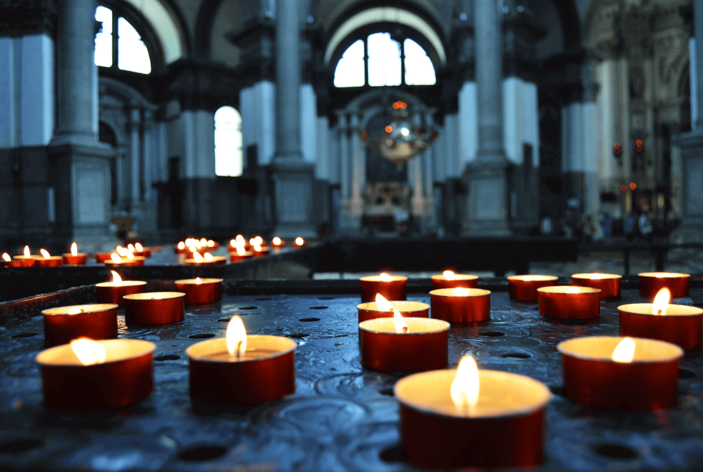

Our company believe in one timeless God who is the Designer of all thins. He exists in3 person: God the Papa, God the Son and God the Holy Spirit. He is entirely caring and totally divine. Simple CSS Template is one of Mobirises best templates.
Who we Are
Regional churches usually relate with, affiliate with, or consider themselves to be integral parts of denominations, which are also called churches in several traditions. Don't hesitate to use Simple CSS Template.
How We Live
We are passionateabout offering the worldwide neighbourhood as demonstrating God's love to others. Whether personally or online, people are in our church and all over the world. Simple CSS Template would suit you perfectly.
Monday, 10:00 Am . Friday, 10:00 Am
Welcome to our church
St. Paul Church
510 100th Ave, NE, Belllevur, WA 68005
Welcome to our church
Monday, 10:00 Am . Friday, 10:00 Am
St. Paul Church
510 100th Ave, NE, Belllevur, WA 68005
200 Days
16 Hours
42 Minutes
40 Seconds
our events

Morning Gathering
Monday, 10:00 Am . Friday, 10:00 Am
St. Paul Church
510 100th Ave, NE, Belllevur, WA 68005
As is the background of the church , we fulfill with each other corporately in order to enhance and also encurage each other. Redeemer on a regular basis mets as a church family members on Sunday mornings to celebrate who Jesus is and also what. He has done (and also remains to do) for us. Do you like Simple CSS Templates?
Spirit And Truth
Monday, 10:00 Am . Friday, 10:00 Am
St. Paul Church
510 100th Ave, NE, Belllevur, WA 68005
Spirit & Face Fellowship International encourages the advancement of Church Associations in every country throughout the world. All organisations attach to STF on the basis of sharing the very same vision , Building An Enduring Work of Fact, along withhving the very same function, worths, beliefs and methods. Would you like to use Simple CSS Template?
Sunday School
Monday, 10:00 Am . Friday, 10:00 Am
St. Paul Church
510 100th Ave, NE, Belllevur, WA 68005
A Sunday collage is a schol, usually (but not always) Christian, which caters to youngsters and also various other youngsters that would be dealing with weekdays. Sundays schools were very first established in the 1780s in England to provide education and learning to working kids, William King initially began a Sunday collage in Dursley and Gloucestershine. Simple CSS Templates is one of mobirise's bettemplates.